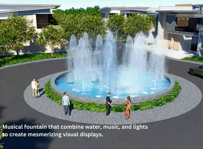

The Invisible Backbone of Modern Gated Communities
When investing in residential land or designing a custom holiday home, attention often gravitates toward plot dimensions, boundary walls, and picturesque landscaping. However, the true litmus test of a world-class plotted township lies beneath the surface. Robust civil engineering—encompassing reliable water supply grids, underground electrical conduit systems, hygienic sewage networks, and scientific stormwater management—determines the long-term liveability, property value, and comfort of any community.
At Ganga County, developed by Atomoney Ganga County in the scenic region of Garhmukteshwar, meticulous planning has gone into establishing state-of-the-art civil infrastructure. Positioned strategically near National Highway 9 (NH-9) and the upcoming Ganga Expressway, this gated township bridges the gap between rural tranquility and metropolitan urban convenience.


1. Underground Electrical Cabling & Power Distribution
Traditional Indian residential colonies and rural clusters are notorious for a chaotic web of overhead wires, sagging utility poles, and frequent power disruptions caused by tree branches or weather storms. Ganga County completely eliminates this visual blight and safety hazard through a fully buried underground electrical grid.
High-grade armored copper cables, robust transformer sub-stations, and dedicated feeder lines are securely encased in heavy-duty protective PVC conduits buried deep underground. This configuration ensures:
- Zero Visual Clutter: Unobstructed blue skies and pristine streetscapes across every avenue.
- Enhanced Safety: Complete elimination of accidental contact hazards from dangling overhead wires during monsoons.
- Uninterrupted Power Flow: Minimized vulnerability to lightning strikes, high winds, and overhead tree interference.
Explore our complete range of features on the official Ganga County highlights page.
2. Comprehensive Water Supply & Storage Architecture
Access to clean, pressurized water is a fundamental prerequisite for residential comfort. Ganga County features an integrated water supply network engineered to meet high consumption standards for daily living and gardening.
The water infrastructure relies on high-capacity deep borewells coupled with an advanced overhead storage reservoir (OHSR) network. Pressurized booster pumps push treated water through durable High-Density Polyethylene (HDPE) pipelines laid beneath all internal roads right up to the boundary of every residential plot.
Deep Borewell Aquifers
Reliable tapping into pure underground water tables with heavy-duty submersible pumps designed for continuous duty cycles.
Overhead Storage & Gravity Feed
Centralized overhead storage tanks ensuring consistent water head pressure across all sectors of the township.
Advanced Filtration Systems
Multi-stage sediment and iron removal filtration plants ensuring domestic water meets rigorous purity parameters.
Video Walkthrough: Inspecting On-Site Infrastructure
Watch our on-ground video documentation highlighting road construction, civil ducting, and development progress across Ganga County:
3. Advanced Sewage Disposal & Treatment Networks
Sanitation and wastewater management are critical for public health and environmental preservation. Unlike older properties relying on primitive septic tanks that require frequent clearing and risk soil contamination, Ganga County incorporates a centralized sewer collection network.
Heavy-duty RCC sewer pipelines laid with precise downward gradients collect wastewater from each plot and channel it toward a dedicated, eco-friendly Sewage Treatment Plant (STP) situated within the township boundaries. Treated greywater is subsequently recycled for landscape irrigation, reducing fresh groundwater extraction.
To examine plot demarcations and utility corridors, consult the official Ganga County master plan layout.
4. Stormwater Drainage & Groundwater Recharge
Monsoon resilience is engineered directly into the civil blueprints of Ganga County. Parallel to the 30-ft and 40-ft wide blacktop internal roads, covered RCC stormwater drains efficiently capture heavy rainfall runoff.
Rather than allowing rainwater to flood streets or run off wastefully, strategic rainwater harvesting pits and recharge wells filter and channel clean precipitation back into the local underground aquifers. This dual-purpose system prevents waterlogging while preserving regional water tables.
For a closer look at finished infrastructure photos and developmental milestones, explore our Ganga County photo gallery.
Technical Specifications Matrix: Infrastructure Comparison
| Utility System | Ganga County Gated Standard | Traditional / Open Land Standard |
|---|---|---|
| Electrical Cabling | 100% Underground Armored Conduits | Messy overhead poles & wires |
| Water Supply | Overhead Reservoirs & HDPE Pipeline Grids | Independent unmonitored borewells |
| Sewage Disposal | Centralized RCC Sewer Lines & STP Facility | Unregulated septic tanks & open drains |
| Stormwater Drainage | Covered RCC Drains with Rainwater Harvesting | Surface runoff flooding roads |
| Road Construction | 30 & 40 Ft. Paved Blacktop & Interlocking Tracks | Unpaved dirt tracks prone to potholes |
5. Infrastructure Synergy with NH-9 & Ganga Expressway
On-site civil infrastructure gains exponential value when paired with macro-level regional connectivity. Ganga County benefits immensely from its proximity to major national transit arteries. The widening of National Highway 9 (NH-9) ensures smooth vehicular movement from Delhi-NCR, while the upcoming Ganga Expressway positions Garhmukteshwar as a high-growth economic corridor.
Whether you are planning to build a peaceful retirement cottage, a weekend second home, or a high-yielding land asset, foundational infrastructure guarantees long-term capital appreciation. Discover more insights on our Ganga County location advantage page and review pricing structures on the Ganga County price list page.



Inspect Ganga County's Infrastructure Live
Connect with our expert consultants today to schedule a comprehensive site visit, inspect our civil utility works, and secure your plot.
Book Your Site Visit Today